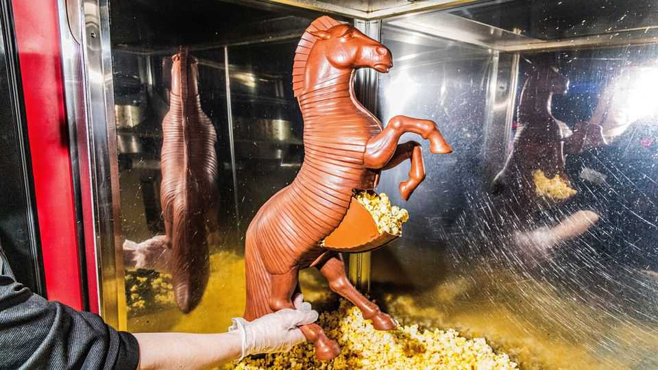
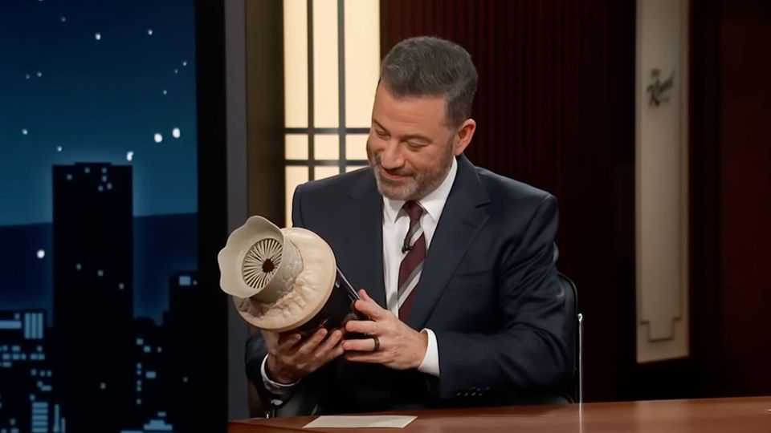

The latest must-have movie memorabilia? Popcorn buckets
Novelty collectibles are lucrative for cinemas

Oct 22nd 2026
THE NEW “Resident Evil” film depicts a work assignment from hell. Bryan, a medical courier, is asked to deliver a package to a hospital in the mountains; on the way, he has to fight off mutant dogs, rats and people infected with a zombification virus. Fans have been coughing up around $20-25 for the official popcorn bucket, which takes the form of Bryan’s green, bespattered courier bag. (Talk about a bloody good snack.) It has sold out in many cinemas.
Popcorn buckets are popping off. AMC, a cinema chain, has estimated they will bring in $100m in revenue this year, almost double the amount in 2023. “The Odyssey” had buckets shaped like a Trojan horse (for a cool $70) and an imax film camera ($50). “Spider-Man: Brand New Day”, this year’s top-grossing film so far, offered fans the opportunity to dip into a tin shaped like the titular superhero’s head. “The Devil Wears Prada 2” went for a chic red handbag.

These novelty collectibles first went viral in 2024, with the bucket created for “Dune: Part Two”. Inspired by the sandworm that lives on the fictional desert planet of Arrakis, it featured a toothy creature emerging from the dunes. Some, however, felt it resembled a sex toy, and it was lampooned on “Saturday Night Live” and a late-night talk show. (It has become something of a cult item, having listed for $40-800 on resale sites.) Zinc Group, the marketing firm behind the dubious design, did not see the memes coming.
It was the enthusiastic reaction to a “Star Wars” R2-D2 collectible in 2019 that showed how turning a quintessential element of a film into memorabilia can delight fans. “It’s about the tangible experience with the movie that you’re going to see,” says Marcus Gonzalez, global creative director at Zinc. Creative keepsakes help fans feel connected with the film long after the credits roll.
Popcorn buckets are a “status symbol”, argues Calvin Innes, a creative strategist. Well, sort of. Often there is a limited supply, meaning that people who rush to the cinema on a film’s opening weekend are more likely to get their hands on one. Owning a limited-edition item signals to other obsessive fans that you are one of them.
The hype is great news for cinemas, which need to lure customers. Concessions—food and drinks—allow them to squeeze more profit from every moviegoer and popcorn buckets are a way to turn fans’ enthusiasm into high-margin sales. For Vue, a British cinema chain, sales of collectible merchandise have increased ten-fold since 2023.
Design is key. A “well-executed popcorn bucket is a really delightful kind of object” to people of all ages, avers Tim Sparrow, director of retail at Cineworld, another chain: it makes the film experience “so much richer”. The best popcorn buckets turn a movie reference into something playful and nostalgic. They have become such a successful marketing tool that fans are almost as excited to see the popcorn bucket for “Dune: Part Three” as they are to see the film itself in December. Now that’s something for film executives to chew on.■